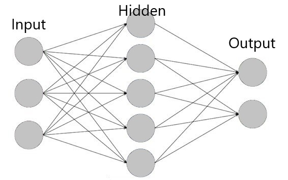
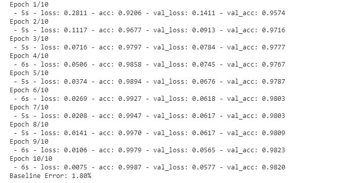

Handwriting Recognition
This project was meant to be my introduction into the world of machine learning. This simple program was built using Python and by
utilizing the Keras library and Tensorflow framework. The idea is to train an AI to be able to recognize handwritten numbers
taken from a large dataset, specifically, the well known MNIST dataset. The dataset consists of a training set composed of
60,000 examples as well as a test set of 10,000 examples.
For this specific project, a simple neural network composed of only 3 layers will be used: the input layer, a single hidden layer,
and the output layer. First, images taken from MNIST dataset are 28x28 in size, resulting in a total of 784 pixels. Each of these
pixels have to be read into the neural network which results in having 784 nodes for the input layer. Each node will take in a
value ranging from 0 to 255, which represents the greyscale value of the pixel. The model will be trained on this basis as to recognize patterns
between the pixels and greyscale value in order to accurately predict numbers.
To put it simply, a nerual network works
by interpreting all the inputs and assigning them a weighted connection which is then fed into the hidden layer. Here, each node with its own weighting
(known as its bias) will consist of a value resulting from summation of the weighted results from each of the input nodes plus the bias value. This
process is basically done again by feeding the new value along a connection with a weight, to the output layer in which each node also as a bias. Depending
on the final value of the output nodes, the model will make a prediction on the the final result.

In my case, there are 10 ouputs, each representing a number from 0 to 9. Depending on the final value of the output nodes (1 node with the value 1
while others are 0), the model will predict a number to go along with the image fed in. In order to train the model, a test set conisting of 60,000 images is fed into the
intitial neural network which conists of randomly assigned weights. In order for the model to "learn", it makes a prediction based on its randomly assigned weightings and
then compares to see if the prediction it made was correct. If the prediction is wrong, the model goes back and readjusts the weightings and bias to be able
to make a more accurate prediction next time. This process is known as "back-propagation" and is repeated several times using the thousands of training images. In order to
determine the proper weighting to be assignded, the model uses gradient-descent, which is an optimization algorithm and in my case, I will be using the Adam optimizer.
To make things easier, the Keras library is used which has functions that allow for easy building of neural networks and implementation of opitmizers.
The result is a program that is simple in code, but complex in theory. The model is trained by passing the entire dataset through 10 times (each time is called an "epoch")
before the final pass which shows how accurate the model is.

As seen, after just 10 epochs, the model was able to achieve an accuracy of 98% in predicting the correct number. Although 98% is already
pretty impressive, I hope to come back and instead of using the Keras models, I plan to make my own neural network to further improve the results.
Close